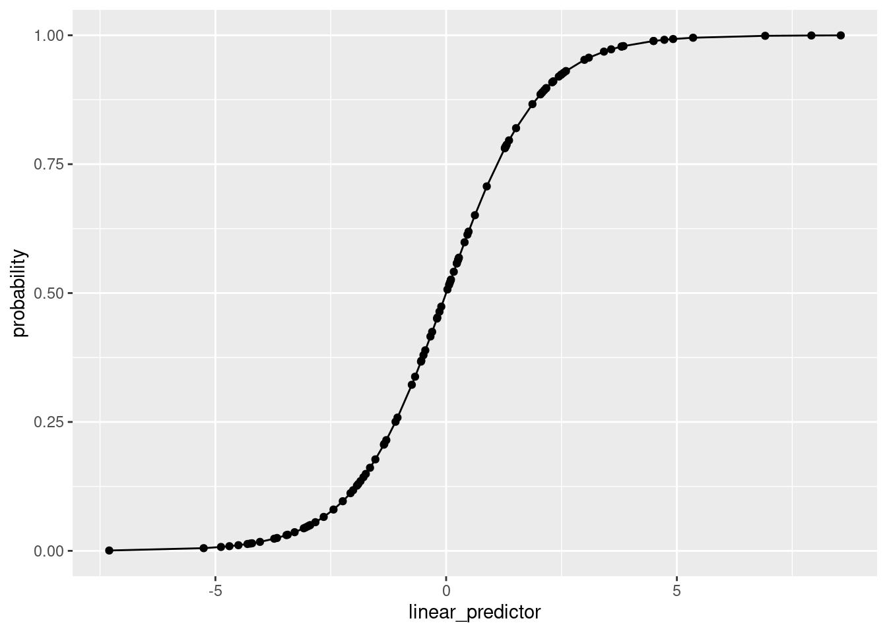

Learn about Generalized Linear Models (GLMs), and be able to decide which model is most appropriate for the problem at hand.
Let’s load some packages:
library(tidyverse) # our friend the tidyverse
── Attaching core tidyverse packages ──────────────────────── tidyverse 2.0.0 ──
✔ dplyr 1.1.2 ✔ readr 2.1.4
✔ forcats 1.0.0 ✔ stringr 1.5.0
✔ ggplot2 3.4.3 ✔ tibble 3.2.1
✔ lubridate 1.9.2 ✔ tidyr 1.3.0
✔ purrr 1.0.2
── Conflicts ────────────────────────────────────────── tidyverse_conflicts() ──
✖ dplyr::filter() masks stats::filter()
✖ dplyr::lag() masks stats::lag()
ℹ Use the conflicted package (<http://conflicted.r-lib.org/>) to force all conflicts to become errors
library(MASS) # negative binom regression
Attaching package: 'MASS'
The following object is masked from 'package:dplyr':
select
14.2 Introduction
The linear regression we’ve explored during the past weeks attempts to estimate the expected value for response (dependent) variable \(Y\) given the predictors\(X\). It assumes that the response variable changes continuously, and that errors are normally distributed around the mean. In many cases, however:
the response variable does not have support in the whole real line (e.g., binary, count, only positive values)
the errors are not normally distributed (e.g., the response variable can take only positive values)
the variance changes with the mean (heteroscedasticity)
In these cases, you can use Generalized Linear Models (GLMs) to fit the data. In the simplest form of GLMs,
The response variable is modeled by a single-parameter distribution from the exponential family (Gaussian, Gamma, Binomial, Poisson, etc.)
A link function linearizes the relationship between the fitted values and the predictors.
Parameters are estimated through a least squares algorithm.
14.2.1 Model structure
In practice, we need to determine three parts of the model:
Random component the entries of the response variable (\(Y\)) are assumed to be independently drawn from a certain distribution (e.g., Binomial)—typically a distribution that can be modeled using a single parameter.
Systematic component the explanatory variables (\(X_1\), \(X_2\), \(\ldots\)) are combined linearly to form a linear predictor (e.g., \(\beta_0 + \beta_1 X_1 + \beta_2 X_2 + \ldots\)). The explanatory variables can be continuous, categorical, or mixed.
Link function\(g(u)\) specifies how the random and systematic components are connected.
14.3 Binary data
The most extreme case of departure from normality is when the response variable can assume only values 0 or 1 (no/yes, survived/deceased, lost/won, etc.). A Bernoulli random variable can take values 0 or 1, and therefore provides the Random component of the model:
Saying that the probability \(P(Y_i = 1) = \pi_i\), and \(P(Y_i = 0) = 1 - \pi_i\). Now we want to relate the parameter \(\pi_i\) to the linear predictor (i.e., choose a link function). This can be accomplished in a number of ways.
14.3.1 Logistic regression
The most popular choice is to use the Logit function as the link function:
Clearly, when \(\beta_0 + \beta_1 x_i = 0\), the probability \(\pi_i = 1/2\), while the probability tends to 1 when \((\beta_0 + \beta_1 x_i) \to \infty\) and to zero when \((\beta_0 + \beta_1 x_i) \to -\infty\). :
# some random dataX <-rnorm(100)beta_0 <-0.35beta_1 <--3.2linear_predictor <- beta_0 + beta_1 * Xpredicted_pi_i <-exp(linear_predictor) / (1+exp(linear_predictor))ggplot(data =tibble(linear_predictor = linear_predictor, probability = predicted_pi_i)) +aes(x = linear_predictor, y = probability) +geom_point() +geom_line()

As you can see, this is a logistic curve, hence the name. The parameters \(\beta_0\) and \(\beta_1\) control the location of the inflection point and the steepness of the curve, allowing you to model binary response variables (and, with a slight abuse of the error structure, proportions or probabilities).
Other choices of link functions are possible. For example, in economics the probit function is preferred:
\[
\text{Probit}(\pi_i) = \Phi(\pi_i)
\] and \(\Phi(\cdot)\) is the cumulative distribution function of the standard normal normal distribution:
\[
\Phi(z) = \frac{1}{\sqrt{2 \pi}}\int_{-\infty}^z e^{\frac{-t^2}{2}} dt
\] Clearly, you could alternatively use the cumulative distribution function of any distribution that has support on the real line.
14.3.2 A simple example
We want to know whether being in first, second and third class, as well as gender (women and women first!) influenced the probability of survival in the Titanic disaster. We start with a null model (all passengers have the same probability of survival):
library(titanic)# model 0: probability of survival in general# regress against an interceptmodel0 <-glm(Survived ~1, # only interceptdata = titanic_train, family ="binomial") # logistic regressionsummary(model0)
Call:
glm(formula = Survived ~ 1, family = "binomial", data = titanic_train)
Coefficients:
Estimate Std. Error z value Pr(>|z|)
(Intercept) -0.47329 0.06889 -6.87 6.4e-12 ***
---
Signif. codes: 0 '***' 0.001 '**' 0.01 '*' 0.05 '.' 0.1 ' ' 1
(Dispersion parameter for binomial family taken to be 1)
Null deviance: 1186.7 on 890 degrees of freedom
Residual deviance: 1186.7 on 890 degrees of freedom
AIC: 1188.7
Number of Fisher Scoring iterations: 4
# the best fitting (alpha) intercept should lead to # e^alpha / (1 + e^alpha) = mean(Survived)mean(titanic_train$Survived)
Consider the alternative models Survived ~ Sex * factor(Pclass), Survived ~ Sex + Pclass, Survived ~ Sex * Pclass, Survived ~ Sex:factor(Pclass), Survived ~ Sex:Pclass. Explain what each model is doing in English.
14.3.3 Exercise in class: College admissions
With slight abuse of notation, you can fit probabilities using the logistic regression (the only problem is that you don’t know how many values contributed to the calculations of the probabilities—i.e., sample sizes). Read in the file admission_rates.csv, containing data on admissions to several universities. Your goal is to find a good prediction (or a good combination of predictors) for the Admission_rate. You can use State, Ownership (public/private), Citytype (town, suburb, city), SAT (typical SAT score of admits), AvgCost (tuition). Fit the models using:
dt <-read_csv("data/admission_rates.csv")
Rows: 195 Columns: 7
── Column specification ────────────────────────────────────────────────────────
Delimiter: ","
chr (4): Name, State, Ownership, Citytype
dbl (3): SAT, AvgCost, Admission_rate
ℹ Use `spec()` to retrieve the full column specification for this data.
ℹ Specify the column types or set `show_col_types = FALSE` to quiet this message.
# examplelogit_1 <-glm(Admission_rate ~ AvgCost, data = dt, family ="binomial")
Warning in eval(family$initialize): non-integer #successes in a binomial glm!
(do not worry about the warning non-integer #successes in a binomial glm!).
Plot fitted vs. observed admission rates, when using different combinations of predictors.
Score the models using AIC: which is the single best predictor of acceptance rate? (Note: as we will see later this week, the lower the AIC, the better).
AIC(logit_1)
[1] 220.7783
Which the best combination of two predictors?
14.4 Count data
14.4.1 Poisson regression
Suppose your response variables are non-negative integers. For example, we are counting the number of eggs females lay as a function of their age, body size, etc. A possible model for this case is to think of the response variable as being sampled from a Poisson distribution:
\[
Y_i \sim \text{Pois}(\lambda_i)
\]
and that the logarithm of the parameter \(\lambda_i\) depends linearly on the predictors:
In this case, our link function is the logarithm, transforming the relationship between the fitted values and the predictors into a linear regression.
14.4.2 Exercise in class: Number of genomes
The file data/genomes.csv contains the year in which the genome of a given animal was published. The file sequence_cost.csv the estimated cost per sequencing a Mb in a given year.
Count the number of genomes published per year (store the value as n) and store it in the tibble num_genomes along with the values Year and Dollars_per_Mb (note: you need to use inner_join to pull this off);
Fit the number of genomes published in a given year:
using only an intercept (your predictions should match the mean) (Code: pois_1 <- glm(n ~ 1, data = num_genomes, family = "poisson"))
using the year as a predictor
using the cost of sequencing as a predictor
For each model, plot the observed n vs its predicted value, and compute AIC. Is the fit superior when we use Year or Dollars_per_Mb?
14.4.3 Underdispersed and Overdispersed data
The main feature of the Poisson distribution is that the mean and the variance are both equal to \(\lambda\). You might remember (Taylor expansion) that:
\[
e^x = \sum_{n = 0}^{\infty} \frac{x^n}{n!}
\]
Then, for \(X\) sampled from a Poisson distribution:
The fact that the variance equals the mean is a hard constraint, rarely matched by real data. When you encounter over-dispersion (i.e., the variance in the data is much larger than what assumed by Poisson), you need to choose a different model. This happens very often, and the main solution to use is a Negative Binomial Regression (a negative binomial distribution can be thought of as a Poisson with a scaled variance). In practice, this amounts to fitting:
\[
\mathbb E[\lambda_i] = \beta_0 + \beta_1 X_i
\] and
\[
\mathbb E[\lambda_i^2] - \mathbb E[\lambda_i]^2 = \mathbb V[\lambda_i] = \phi \lambda_i
\] Where \(\phi\) controls the dispersion of the data. A value \(\phi > 1\) signals over-dispersion, while (the very rare case of) \(\phi < 1\) under-dispersion. The Poisson regression is appropriate only when \(\phi \approx 1\). A simple way to test for dispersion in to fit a quasipoisson model, which returns a dispersion parameter (anything larger than 1 means over-dispersion).
14.4.4 Exercise in class: Number of genomes
For the models above, change the family to quasipoisson to check the dispersion (e.g., qpois_1 <- glm(n ~ 1, data = num_genomes, family = "quasipoisson")).
Do you have over-dispersion?
If the data are over-dispersed, fit them again using glm.nb (a negative binomial regression model provided by the package MASS).
14.4.5 Separate distribution for the zeros
In several biologically-relevant cases, we have an excess of zeros. For example, you might have animals, that, if they reach the age of 1, will go on to a live a number of years—say well-described by a Poisson distribution. However, mortality immediately after birth is high. In such cases, you can use zero-inflated or zero-hurdle models.
In zero-inflated models, you can think of having a conditional branching: with probability \(p_z\) your count is zero; if not (prob. \(1-p_z\)) it is sampled from a given distribution. As such a count of zero can stem from two different processes: either because you got a zero at the first step, or because you have sampled a zero from the distribution.
Zero-hurdle models are slightly different: you first decide whether you’re going to have a zero; if not, you sample your data from a truncated distribution, such that you cannot sample a zero from this second source.
Zero-inflated and zero-hurdle models are examples of mixture models.
14.5 Other GLMs
Historically, GLMs have been defined for the canonical families:
Gaussian: linear regression
Gamma and Inverse Gaussian: Positive, continuous
Poisson: count data
Negative Binomial: count data (fit an ancillary parameter for over-dispersion)
Binary/Binomial (logistic): binary responses; number of successes; probabilities/proportions (with slight abuse).
However, the same basic idea led to the development of “non-canonical” GLMs:
Log-normal: Positive, continuous
Log-gamma: survival models
Probit: binary
and many others. Fitting the models can be done using Maximum Likelihoods, or in a Bayesian framework (typically, through MCMC).
14.6 Readings and homework
There are two useful swirls in the course Regression Models: Binary Outcomes and Count Outcomes